Phase 1
ResearchLiterature
Deciding What to Build and How
The starting idea for the project was rendering a nebula in general. Before writing any code, we spent a significant amount of time understanding what that actually required technically and what had already been done in reasearch and in the industry.
We slowly started learning about two main pipelines. The first is the visual effects and cinematic science one, which usually starts from a manually modelled mesh or simulations, then voxelises them into a density grid and finally injects procedural noise at render time to recover fine structure. The results are visually stunning, but the geometry does not come from real data. On the astronomy side, tools like DS9 and CARTA can load real spectroscopic datacubes and render them volumetrically, but they use simple ray casting with no absorption, no transmittance, no actual light transport..
The gap we decided to occupy: take real observational data — measured geometry, kinematics, line ratios — and pass it directly to a physically-based ray marcher.
The rendering technique was clear from the start: volume ray marching; for that, we followed the discrete solution to the Radiative Transfer Equation as documented by Scratchapixel. We followed its tutorial carefully — transmittance accumulation, Beer-Lambert law, stochastic jitter — before touching any nebula-specific data.
What remained open was where to get the data to start from, as we needed a volumetric representation of an actual nebula. That's when we found Martin et al. (2021).
Phase 2
DataSITELLEFITS
Finding the Data: Martin et al. and the SITELLE Point Cloud
Martin et al. (2021) used the SITELLE imaging Fourier transform spectrograph at the Canada-France-Hawaii Telescope to observe the Crab Nebula across the full optical field. The key capability of SITELLE is that it measures a complete emission-line spectrum at every sky pixel simultaneously. From those spectra, the authors extracted, for each detected filament, a radial velocity via the Doppler shift of the emission lines.
That radial velocity is what makes 3D reconstruction possible. The Crab Nebula expands at ±1500 km/s — filaments moving away appear redshifted, those approaching appear blueshifted. By converting Doppler shift to depth coordinate, Martin et al. reconstructed a three-dimensional point cloud of the thermal ejecta from a single 2D observation. This is the dataset we decided to build everything on.
416,573measured points
5scalar fields
±1500km/s expansion
FITSsource format
Each point carries five values: an Hα flux used as density proxy; the NII/Hα line ratio; the SII/Hα ratio; the SII 6716/6731 electron density diagnostic; and the radial velocity. What the dataset does not include: absolute Hα intensity (only ratios), any OIII measurement, or the synchrotron continuum of the pulsar wind nebula. The data came as FITS files, the standard format in astronomy; therefore, the first task was reading and understanding the coordinate system and value distributions before any voxelisation.
Phase 3
PythonVoxelisation128³
First Render: FITS to 128³ Grid to Image
The ray marcher needs a uniform grid. Therefore, we decided to start with a voxelisation
that converted the FITS scalar fields into binary grids at a resolution of
128³, deliberately low to keep rendering times fast.
The core operation: for each of the 416,573 input points, compute its
integer voxel index and accumulate the scalar value. The value stored per
voxel is the mean of all points that fall into it.
The C++ ray marcher at this stage was the one constructed following the
Scratchapixel tutorial, with a simple colour model and even scattering,
which was later removed since its effect is negligible for the Crab Nebula.
It worked. We managed to obtain the filamentary structure of
the Crab after a few trials. Seeing the visible structure was a
genuine relief. However, the nebula was monochromatic — the next phase was to
investigate why and how it could be fixed.
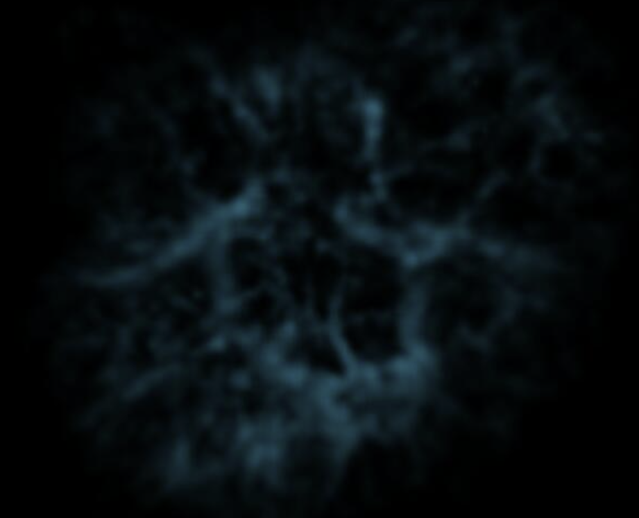
fig 01 — first render from real SITELLE data. 128³ grid, flat
single-colour emission. Far from realistic, but structurally correct.
Phase 4
Log StretchDynamic Range
Log Stretch: Recovering the Faint Filaments
We realized that the first render was monochromatic for two reasons: a byte-order mismatch
(FITS is big-endian; fixed with .astype('<f4')), and a linear
normalisation that compressed 99% of voxels to near-zero, so the colour model
was rarely reached.
We fixed it using a logarithmic stretch:
# lifts faint structure by compressing the dynamic range
g_stretched = np.log1p(9 * g) / np.log1p(9)
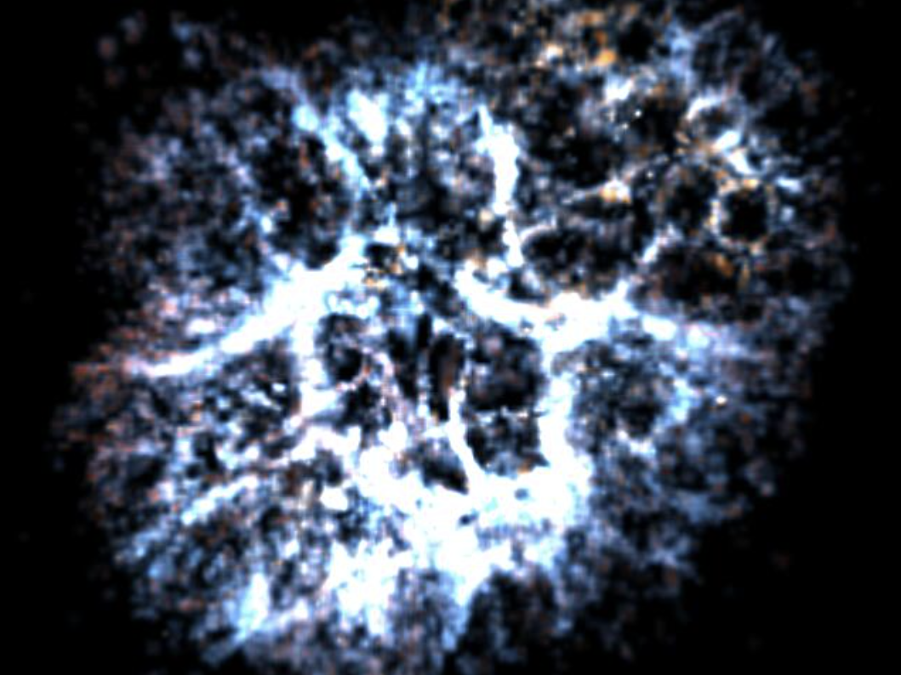
fig 02 — after logarithmic stretch. The honeycomb network of
filaments becomes clearly legible for the first time.
Phase 5
Tone MappingReinhard
Reinhard Tone Mapping
The next thing to tackle was the nebula brightness. The ray marcher accumulates unbounded physical radiance, therefore a naive clamp
to [0,1] producew flat saturated white in the densest regions, losing
the structural detail we care about. The solution is tone mapping: compressing the
full dynamic range into displayable values while preserving relative
differences.
We implemented Reinhard on luminance rather than
per-channel, which preserves colour ratios; per-channel Reinhard drives
all three channels toward similar values independently, desaturating the
image.
// luminance-based Reinhard — preserves colour ratios
vec3 reinhard(vec3 c, float exposure = 1.4f) {
c *= exposure;
// CIE perceptual weights for sRGB
float lum = 0.2126f*c.x + 0.7152f*c.y + 0.0722f*c.z;
float scale = 1.0f / (1.0f + lum); // x/(1+x): bounded, never clips
return c * scale;
}The exposure of 1.4 was tuned manually to lift the midtones enough to
reveal faint outer filaments without blowing out the dense central regions.
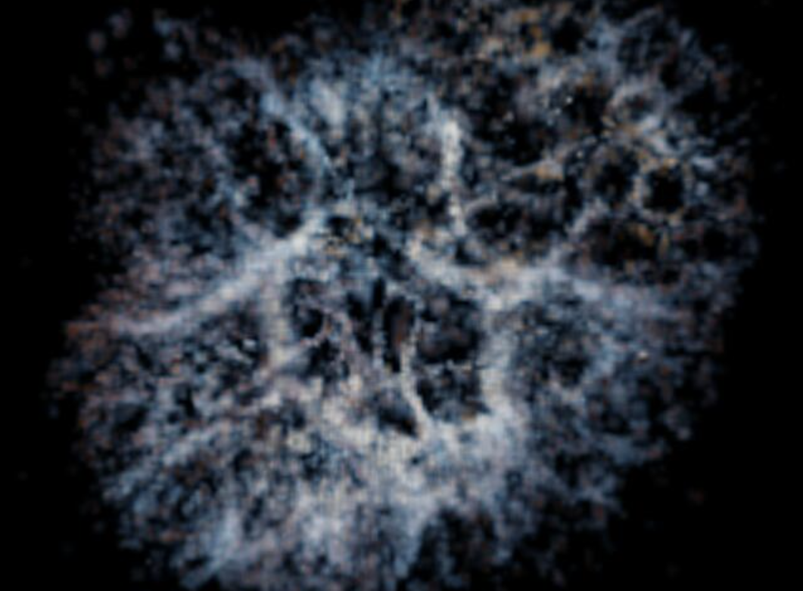
fig 03 — after Reinhard tone mapping with exposure 1.4. Dense
filaments no longer clip to white; the outer structure becomes visible.
Phase 6
Colour ModelSII 6716/6731
Colour Model Revision and Electron Density Diagnostic
In this phase we made two changes to the colour model. First, the colour
palette and blend factors were revised: the previous render was dominated
by white and grey-blue tones because the blend weights were too weak to
push the colour away from the default Hα proxy. Strengthening the
NII/Hα and SII/Hα blend factors brought out the red and violet
tones visible.
Second, the SII 6716/6731 grid was connected to the colour model.
It encodes the electron density of the gas: a high ratio
(~1.4) indicates rarefied gas at ~100 cm⁻³; a low ratio (~0.4)
indicates dense gas at ~10,000 cm⁻³. This ratio has no spectral colour
of its own — it is a diagnostic, not an emission line. We use it to
modulate saturation: dense filaments are gently
desaturated; rarefied regions keep their full colour. The guard condition
on sii_sii > 0.05 excludes voxels without a measurement,
which carry zero and would otherwise read as maximally dense gas.
if (density > 0.f && sii_sii > 0.05f) {
float t_dense = std::clamp((1.f - sii_sii) * 0.5f, 0.f, 1.f);
baseColor *= (1.f - t_dense * 0.5f);
}
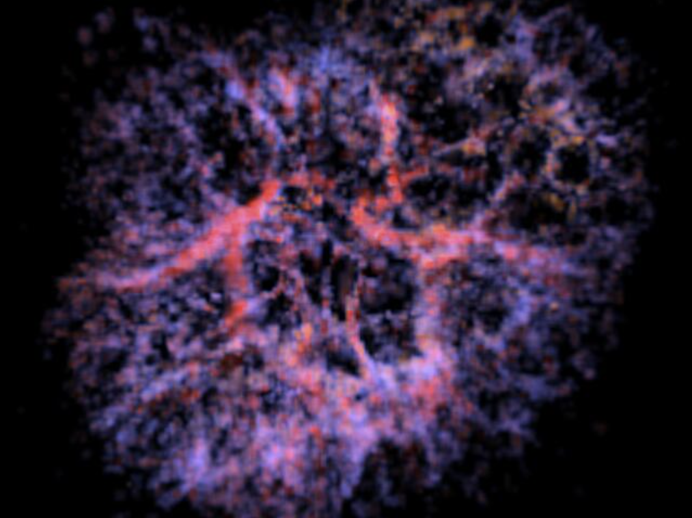
fig 04 — revised colour palette and SII 6716/6731 electron
density diagnostic. The shift from grey-blue to red and violet reflects
both the stronger blend weights and the saturation modulation from the
density diagnostic.
Phase 7
Colour ModelDoppler Velocity
Radial Velocity as a Colour Signal
At this stage, we introduced the fifth grid from Martin et al.: the radial velocity, the same quantity used to reconstruct the 3D structure. At render time, it becomes an additional chromatic cue: the colour model reproduces the Doppler shift that physically reddens or bluens emission lines in individual filaments
In the normalised velocity grid, 0.5 corresponds to gas at rest. Values above 0.5 indicate gas receding from us (redshift); below 0.5, approaching gas (blueshift).
// vel=0.0 means no measurement — guard with both conditions
if (density > 0.f && vel > 0.f) {
float doppler = (vel - 0.5f) * 2.f;
float strength = 0.12f;
baseColor.x += doppler * strength; // R rises with redshift
baseColor.z -= doppler * strength; // B rises with blueshift
baseColor.x = std::clamp(baseColor.x, 0.f, 1.f);
baseColor.z = std::clamp(baseColor.z, 0.f, 1.f);
}As visible in the render below, the blue shift across the outer shell is clearly perceptible. The
strength was reduced to 0.12 in a later phase to ensure ionisation state and shock
structure remain the dominant chromatic signals, with kinematics as a
secondary modulation.
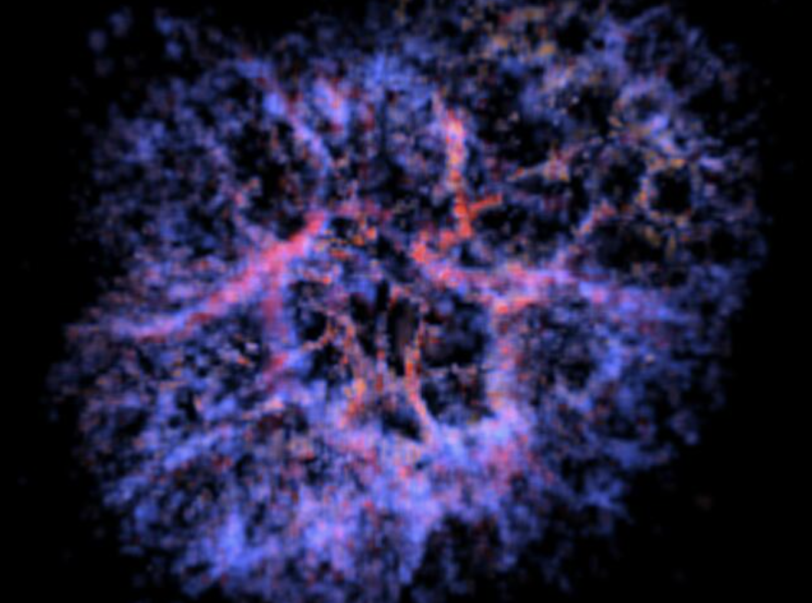
fig 05 — radial velocity Doppler shift applied.
Phase 8
256³Resolution
Stepping Up to 256³
With the full colour model working at 128³, we re-ran the voxelisation
at double the resolution per axis. The
416,573 input points now populate a much denser grid, producing
finer and more continuous filaments.
Increasing the resolution initally made the render significantly darker. At
128³, each occupied voxel accumulated the mean of several input points,
producing relatively high density values. At 256³, the same points are
spread across eight times as many voxels, so the average density per
voxel drops — and with it, the accumulated radiance along each ray. The
rendering parameters sigma_t and emissivity had to be changed to recover a comparable brightness, since they are not physical
absolutes but depend on the voxel density distribution of the specific
grid.
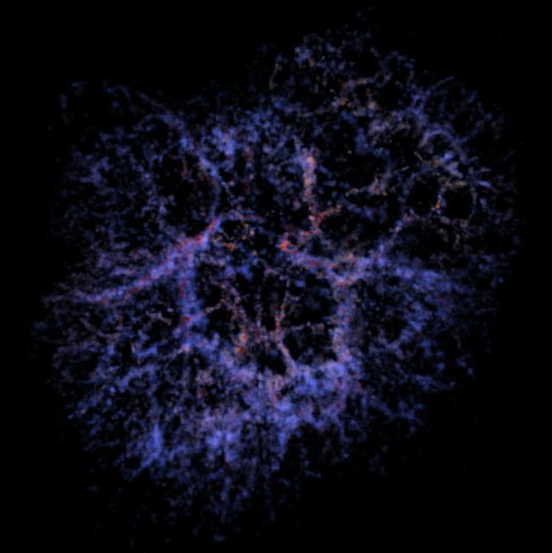
fig 06 — 256³ voxelisation after parameter retuning. Filaments
are thinner and more continuous; the honeycomb structure is clearer at
the edges.
Memory and render time both increased proportionally, but at 256³ the six grids fit comfortably
in RAM and per-frame render time at 800×800 with OpenMP remained tractable.
Phase 9
512³Colour Revision
512³ and Revising the Colour Palette
Since the rendering times were manageable at 256³, we proceeded to 512³. At this density, the 416,573
points fill 216,433 occupied voxels — about 1.9 points per occupied voxel on average.
At this stage we also revised the colour palette, tuning the NII/Hα
and SII/Hα scale factors and the three reference colours to better
match the physical regimes and move closer to the appearance of the HST
reference. This was an intermediate revision as the colour logic was not yet the
final one, but it produced noticeably richer colour separation than previous
versions.
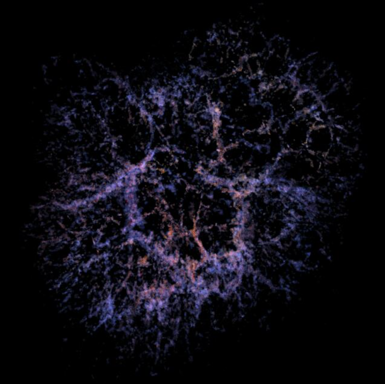
fig 07 — 512³ grid with intermediate colour revision.
Phase 10
Orientation FixCoordinates
The Nebula Was Flipped
The next step was correcting one important error we had noticed for a while now: the nebula was spatially mirrored. The orientation of the filamentary structure did not match the reference. This was a small error occuring during the ray marching process.
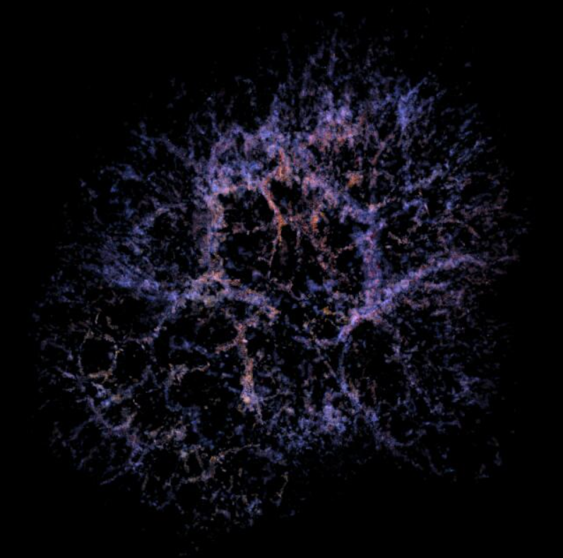
fig 08 — correct orientation matching Hubble reference.
Phase 11
StarsGaia DR3ICRS
Background Stars from Gaia DR3
The nebula was looking better and better each phase, but something was missing: the stars. Adding real background stars provides spatial context and embeds the image in an actual sky. We queried the Gaia DR3 catalogue for all stars with magnitude below 7, obtaining21,329 stars across the full celestial sphere.
The challenging part was the coordinate system. Gaia gives positions in the International Celestial Reference System (ICRS), in spherical coordinates (right ascension α, declination δ). Our world space has its own axes: camera faces −Z at frame 0, Y is world up. These needed a rotation matrix constructed once at load time, anchored on the Crab's known ICRS position (α = 83.63°, δ = 22.01°).
// Crab's ICRS direction becomes -Z in world space
vec3 crabICRS = { cos(dec)*cos(ra), cos(dec)*sin(ra), sin(dec) };
vec3 camZ = { -crabICRS.x, -crabICRS.y, -crabICRS.z };
// build orthonormal frame using celestial north as reference "up"
vec3 camX = cross(northPole, camZ).nor();
vec3 camY = cross(camZ, camX).nor();
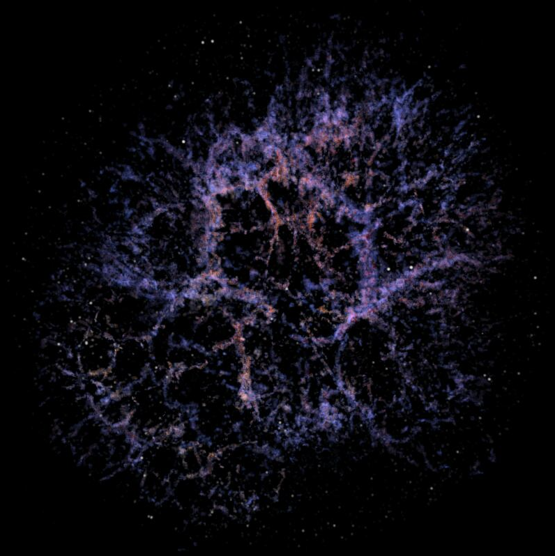
fig 09 — nebula with Gaia DR3 background stars. Stars attenuated by the volume's transmittance T. At this stage all stars rendered white.
Phase 12
Orbit CameraAnimation
The Orbital Camera — and Seeing the Other Side
With a stable single-frame pipeline, it was time to animate the scene. We built an orbit camera that circles the nebula at a fixed radius of 80 world units, constructing the camera-to-world matrix each frame from the current orbital angle.
float angle = 2.f * M_PI * frame / numFrames;
Matrix cameraToWorld = buildOrbitCamera(angle, 80.f);
// right = cross(forward, worldUp), up = cross(right, forward)
// camZ = -forward (ray marcher shoots toward -Z local)
The first thing we rendered once the orbit worked was a frame from directly opposite — angle = π, the camera on the far side of the nebula. Filaments that appear foreground from the front view are now behind the main emission body, while the structures that were previously hidden are now exposed. The view from the far side looked meaningfully different, which confirmed that the 3D structure is geometrically coherent in all directions and not just a flat shell that happens to look good from one angle.
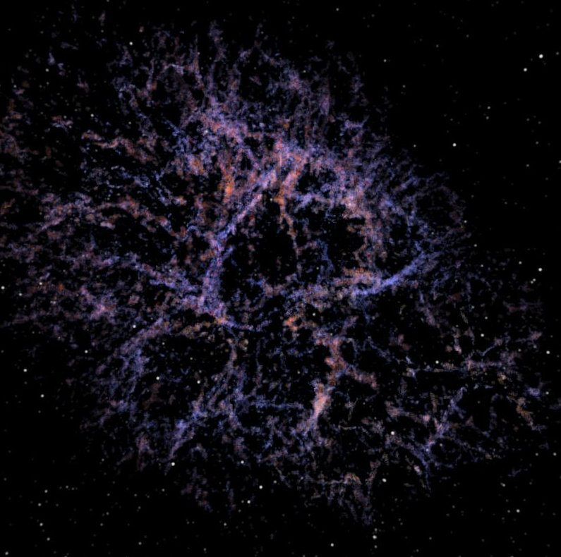
fig 10 — the Crab from the opposite orbital position.
Phase 13
NanoVDBSparse Rendering
Switching to NanoVDB
The next step was optimizing the rendering pipeline. The uniform-grid renderer allocates the full 512³ array regardless of occupancy — roughly 512 MB per grid, times five grids. At the same time, because of the Crab's sparse filamentary structure, the overwhelming majority of that memory holds zeros. The solution is NanoVDB, which addresses this with a hierarchical sparse tree that allocates memory only for non-empty active voxels, discarding empty space at the leaf level.
Therefore, we converted the five grids using nanovdb::tools::createNanoGrid and saved them as separate .nvdb files. The ray march logic is identical, but sampling changes in two ways: the manual trilinear lookup is replaced by SampleFromVoxels operating directly on the sparse tree, and the ray is clipped against the index-space bounding box before marching begins — steps outside the active region are skipped entirely.
// convert ray to index space, clip against active bbox
nanovdb::math::Ray<float> idxRay = nvRay.worldToIndexF(*densityGrid);
float t0 = idxRay.t0();
float t1 = idxRay.t1();
if (!idxRay.intersects(densityGrid->indexBBox(), t0, t1))
return; // ray misses all active voxels entirely
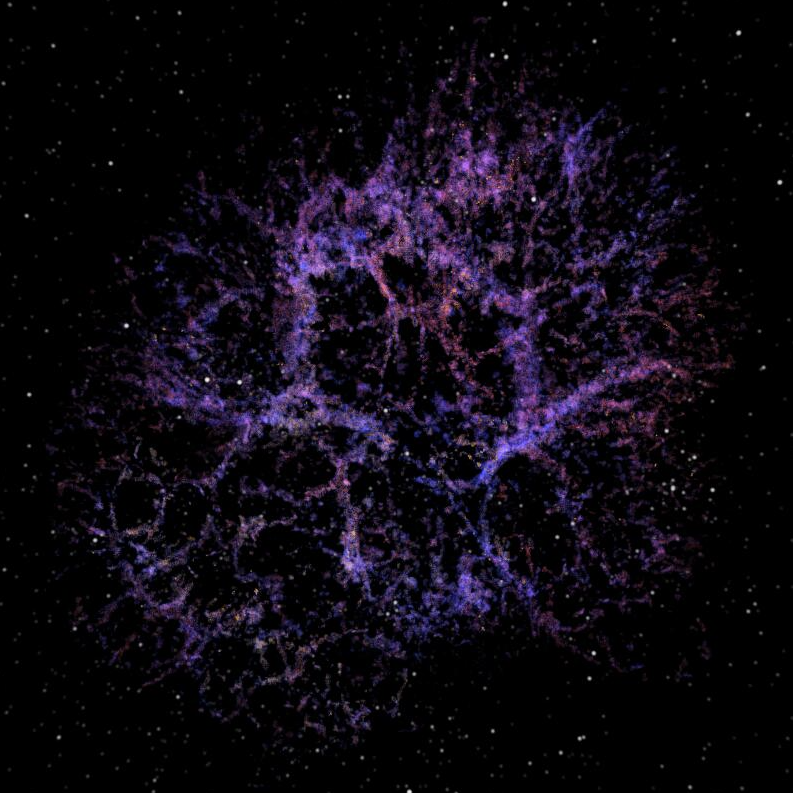
fig 11 — NanoVDB sparse renderer.
The render looks broadly similar to the previous version, but the memory usage was now proportional to the number of occupied voxels rather than the full grid size. The five grids together take around 150 MB, 17 times less than the uniform grid. Render times are also 6 times faster, since rays that would previously march through empty space are now skipped entirely.
Phase 14
Star ColoursBallesteros · Helland
Giving the Stars Their Real Colours
With the initial implementation, we were rendering every star white. However, the Gaia catalogue also includes a bp_rp colour index encoding the star's effective surface temperature. Therefore we decided to add the physically derived colours to the stars. The conversion is sequential: the Ballesteros (2012) relation maps bp_rp to temperature, then Helland's empirical blackbody approximation maps temperature to RGB.
// Ballesteros (2012): bp_rp → effective temperature
T = 4600.f * (1.f/(0.92f*bprp + 1.7f) + 1.f/(0.92f*bprp + 0.62f));
T = clamp(T, 1000.f, 40000.f);
// Helland: T → RGB (piecewise above/below 6600K)
r = (T <= 6600.f) ? 1.f : clamp(329.7f * pow(t-60.f, -0.133f) / 255.f, 0.f, 1.f);
Hot B-type stars appear blue-white; cool K-type stars appear orange-red. Stars without a bp_rp measurement default to white.
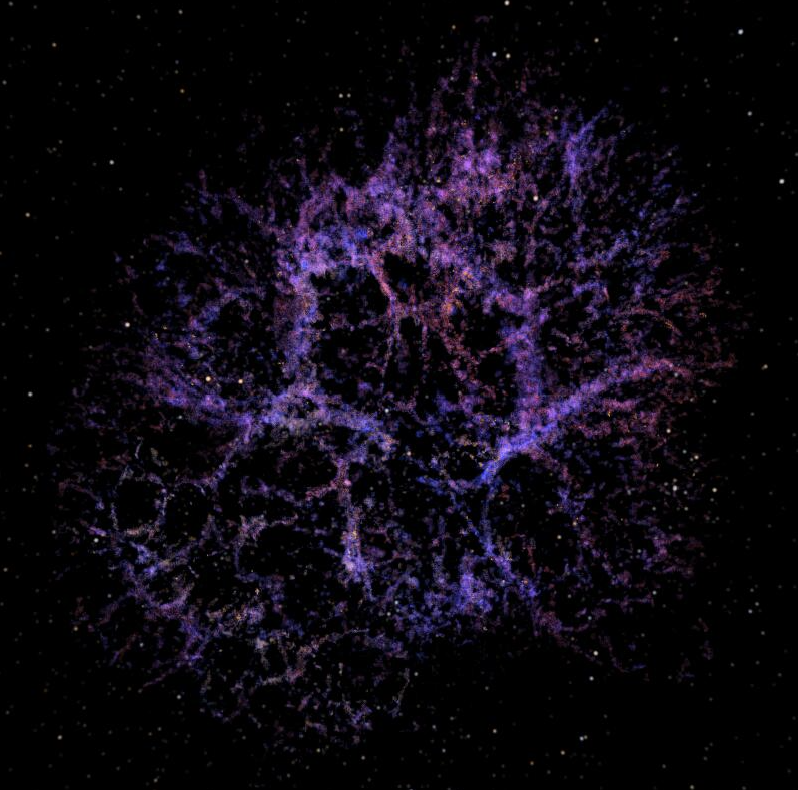
fig 12 — Gaia stars with physically derived colours.
Phase 15
VoxelisationData FidelityColour Model
Cleaning the Voxelisation Pipeline
At this stage we identified two issues in the voxelisation pipeline
that were silently distorting the data before it reached the renderer.
The first was the velocity normalisation. The previous
implementation mapped the full velocity range linearly to [0,1]. Since the
Doppler colour model treats 0.5 as the rest velocity, gas that is physically
at rest was being assigned the wrong colour — shifted toward red or blue
depending on the asymmetry of the dataset. The fix normalises symmetrically
around zero, so 0.5 always corresponds to rest:
# rest velocity always maps to 0.5
abs_max = max(abs(v_min), abs(v_max))
grid[mask] = (grid[mask] / (abs_max + 1e-9)) * 0.5 + 0.5
The second was the absence of percentile clipping.
Anomalous peaks in the raw data dominated the normalisation maximum,
compressing the rest of the distribution into the lower half of [0,1] —
NII/Hα and SII/Hα reached only around 0.53 and 0.55. After
clipping at the 99.5th percentile, both grids reach around 0.93–0.94,
spreading across nearly the full range:
# removes outliers before scatter average
vmax = np.percentile(val[val > 0], 99.5)
val = np.clip(val, 0, vmax)
The render may look broadly similar to the previous version; that's because the old colour function
had been quietly absorbing the pipeline errors all along. With clean data coming in, we corrected nebulaColor to map
the physical quantities directly with no implicit corrections.
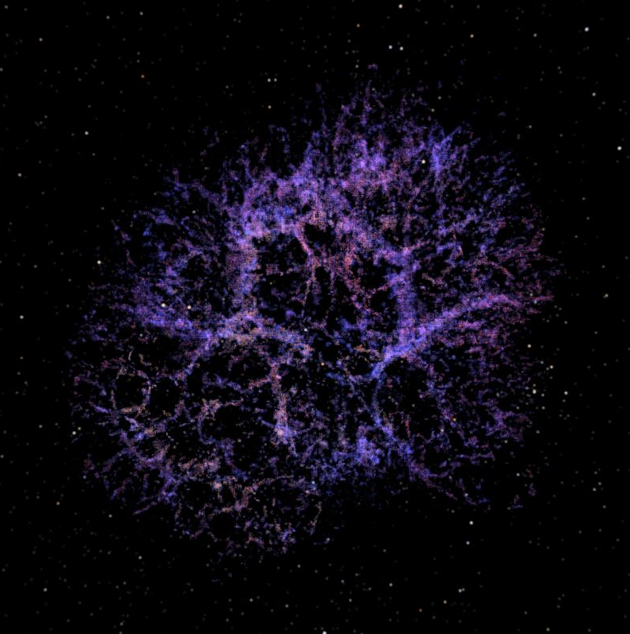
fig 13 — after voxelisation pipeline correction. Colour now
maps clean data directly.
Phase 16
Synchrotron
PWN
Mesh Voxelisation
Adding the Pulsar Wind Nebula
Until now, the nebula's render was incomplete. The Crab's second component — the diffuse teal-blue glow of the pulsar wind nebula (PWN), produced by synchrotron radiation — has no Doppler signature and therefore no 3D reconstruction from IFU data. The SITELLE data we started from only captured the thermal filaments. To address this, we used a NASA triangle mesh derived from Chandra X-ray observations.
The mesh was first rotated to align the pulsar jet axis with the geometry reported in the literature (PA = 124°, inclination = 27°) via Rodrigues' formula. Three million surface points were then sampled and scattered onto the 512³ grid. Because the mesh encodes only the outer shell, Perlin noise was injected into the interior to produce organic sub-structure, followed by Gaussian smoothing and a log stretch.
# inject 4-octave Perlin noise inside the surface mask
grid_noisy[mask] = grid[mask] * (0.6 + 0.4 * noise_vol[mask])
grid_final = gaussian_filter(grid_noisy, sigma=1.2)
grid_final = log_stretch(norm01(grid_final), factor=4.0)
At render time the synchrotron grid is sampled alongside the thermal grids and composited additively with a fixed teal-blue colour and low emissivity weight, keeping it subordinate to the filaments while clearly distinct.
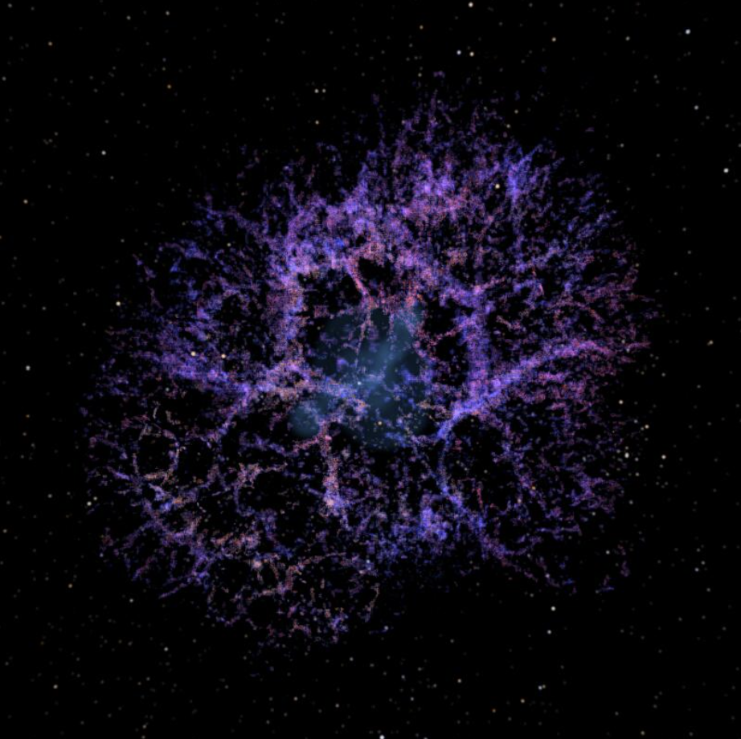
fig 14 — synchrotron PWN enabled. The teal-blue central glow is the PWN; the surrounding network is the thermal ejecta.
Note: the internal density variation of the PWN is entirely procedural. Synchrotron continuum has no discrete emission lines, so no morpho-kinematic reconstruction analogous to Martin et al. exists for this component.
Final Result
120 FramesFull Orbit
120 Frames, One Full Orbit
Finally, with every component in place, we ran the full 120-frame orbital animation. One complete revolution at 100 world units distance, frames saved as sequentially numbered PPMs and assembled with ffmpeg.
The orbital motion really highlights the depth of the nebula as we can clearly see both foreground and background filaments and their different colors.

fig 13 — selected frames from the 120-frame orbital animation. Parallax between foreground and background filaments makes the 3D structure of the Crab Nebula directly perceptible as a continuous motion cue.
120frames rendered
512³final resolution
5spectral channels
21,329Gaia stars
We are really happy with the final result. This project was not easy — we had to iterate many times, fine-tune parameters, and understand the physics deeply enough to make the right decisions for the purpose of the project. It may not look as good as a nebula from the VFX industry, but it still looks amazing to us, and more importantly, it is based on real data.